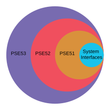

Overview
The Portable Operating System Interface (POSIX) is a family of standards specified by the IEEE Computer Society for maintaining compatibility between operating systems. Zephyr implements a subset of the standard POSIX API specified by IEEE 1003.1-2017 (also known as POSIX-1.2017).

POSIX support in Zephyr
Note
This page does not document Zephyr’s POSIX architecture, which is used to run Zephyr as a native application under the host operating system for prototyping, test, and diagnostic purposes.
With the POSIX support available in Zephyr, an existing POSIX conformant application can be ported to run on the Zephyr kernel, and therefore leverage Zephyr features and functionality. Additionally, a library designed to be POSIX conformant can be ported to Zephyr kernel based applications with no changes.
The POSIX API is an increasingly popular OSAL (operating system abstraction layer) for IoT and embedded applications, as can be seen in Zephyr, AWS:FreeRTOS, TI-RTOS, and NuttX.
Benefits of POSIX support in Zephyr include:
Offering a familiar API to non-embedded programmers, especially from Linux
Enabling reuse (portability) of existing libraries based on POSIX APIs
Providing an efficient API subset appropriate for small (MCU) embedded systems
POSIX Subprofiles
While Zephyr supports running multiple threads (possibly in an SMP configuration), as well as Virtual Memory and MMUs, Zephyr code and data normally share a common address space that is partitioned into separate Memory Domains. The Zephyr kernel executable code and the application executable code are typically compiled into the same binary artifact. From that perspective, Zephyr apps can be seen as running in the context of a single process.
While multi-purpose operating systems (OS) offer full POSIX conformance, Real-Time Operating Systems (RTOS) such as Zephyr typically serve a fixed-purpose, have limited hardware resources, and experience limited user interaction. In such systems, full POSIX conformance can be impractical and unnecessary.
For that reason, POSIX defined the following Application Environment Profiles (AEP) as part of IEEE 1003.13-2003 (also known as POSIX.13-2003). Each AEP adds incrementally more features over the required POSIX System Interfaces.
{kind=link}

POSIX Application Environment Profiles (AEP)
Minimal Realtime System Profile (PSE51)
Realtime Controller System Profile (PSE52)
Dedicated Realtime System Profile (PSE53)
Multi-Purpose Realtime System (PSE54)
POSIX.13-2003 AEP were formalized in 2003 via “Units of Functionality” but the specification is now inactive (for reference only). Nevertheless, the intent is still captured as part of POSIX-1.2017 via Options and Option Groups.
For more information, please see IEEE 1003.1-2017, Section E, Subprofiling Considerations.
POSIX Applications in Zephyr
A POSIX app in Zephyr is built like any other app and therefore requires the
usual prj.conf, CMakeLists.txt, and source code. For example, the app below
leverages the nanosleep() and perror() POSIX functions.
CONFIG_POSIX_API=y
#include <stddef.h>
#include <stdio.h>
#include <time.h>
void megasleep(size_t megaseconds)
{
struct timespec ts = {
.tv_sec = megaseconds * 1000000,
.tv_nsec = 0,
};
printf("See you in a while!\n");
if (nanosleep(&ts, NULL) == -1) {
perror("nanosleep");
}
}
int main()
{
megasleep(42);
return 0;
}
For more examples of POSIX applications, please see the POSIX sample applications.
Configuration
Like most features in Zephyr, POSIX features are highly configurable but disabled by default. Users must explicitly choose to enable POSIX options via Kconfig selection.
Subprofiles
Enable one of the Kconfig options below to quickly configure a pre-defined POSIX subprofile.
Additional POSIX Options and Option Groups may be enabled as needed
via Kconfig (e.g. CONFIG_POSIX_C_LIB_EXT=y). Further fine-tuning may be accomplished via
additional POSIX-related Kconfig options.
Subprofiles, Options, and Option Groups should be considered the preferred way to configure POSIX in Zephyr going forward.
Legacy
Historically, Zephyr used CONFIG_POSIX_API to configure a set of POSIX features
that was overloaded and always increasing in size.
The option is now frozen, and can be considered equivalent to the following:
However, CONFIG_POSIX_API should be considered legacy and should not be used for
new Zephyr applications.